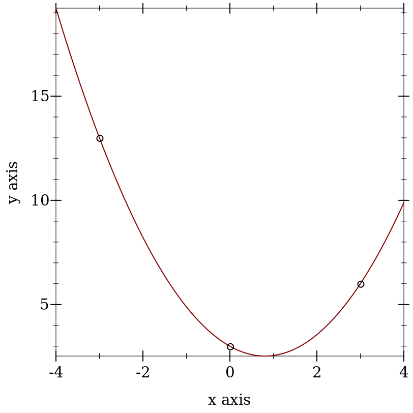

7.3 结构
syntax
(matrix [[expr ...+] ...+] maybe-type-ann)
maybe-type-ann =
| : type
> (matrix [[1 2 3] [4 5 6]])
- : #(struct:Array
(Indexes Index (Boxof Boolean) (-> Void) (-> Indexes Positive-Byte))
#<syntax:/home/ice/racket-8.9-2023-07-14/share/pkgs/math-lib/math/private/array/typed-array-struct.rkt:56:13 prop:equal+hash>
#<syntax:/home/ice/racket-8.9-2023-07-14/share/pkgs/math-lib/math/private/array/typed-array-struct.rkt:55:13 prop:custom-write>
#<syntax:/home/ice/racket-8.9-2023-07-14/share/pkgs/math-lib/math/private/array/typed-array-struct.rkt:54:13 prop:custom-print-quotable>)
(array #[#[1 2 3] #[4 5 6]])
> (matrix [[1 2 3] [4 5 6]] : Number)
- : #(struct:Array
(Indexes Index (Boxof Boolean) (-> Void) (-> Indexes Number))
#<syntax:/home/ice/racket-8.9-2023-07-14/share/pkgs/math-lib/math/private/array/typed-array-struct.rkt:56:13 prop:equal+hash>
#<syntax:/home/ice/racket-8.9-2023-07-14/share/pkgs/math-lib/math/private/array/typed-array-struct.rkt:55:13 prop:custom-write>
#<syntax:/home/ice/racket-8.9-2023-07-14/share/pkgs/math-lib/math/private/array/typed-array-struct.rkt:54:13 prop:custom-print-quotable>)
(array #[#[1 2 3] #[4 5 6]])
> (matrix [[]]) eval:20:0: matrix: given empty row
at: ()
in: (matrix (()))
syntax
(row-matrix [expr ...+] maybe-type-ann)
maybe-type-ann =
| : type
> (row-matrix [1 2 3])
- : #(struct:Array
(Indexes Index (Boxof Boolean) (-> Void) (-> Indexes Positive-Byte))
#<syntax:/home/ice/racket-8.9-2023-07-14/share/pkgs/math-lib/math/private/array/typed-array-struct.rkt:56:13 prop:equal+hash>
#<syntax:/home/ice/racket-8.9-2023-07-14/share/pkgs/math-lib/math/private/array/typed-array-struct.rkt:55:13 prop:custom-write>
#<syntax:/home/ice/racket-8.9-2023-07-14/share/pkgs/math-lib/math/private/array/typed-array-struct.rkt:54:13 prop:custom-print-quotable>)
(array #[#[1 2 3]])
> (row-matrix [1 2 3] : Number)
- : #(struct:Array
(Indexes Index (Boxof Boolean) (-> Void) (-> Indexes Number))
#<syntax:/home/ice/racket-8.9-2023-07-14/share/pkgs/math-lib/math/private/array/typed-array-struct.rkt:56:13 prop:equal+hash>
#<syntax:/home/ice/racket-8.9-2023-07-14/share/pkgs/math-lib/math/private/array/typed-array-struct.rkt:55:13 prop:custom-write>
#<syntax:/home/ice/racket-8.9-2023-07-14/share/pkgs/math-lib/math/private/array/typed-array-struct.rkt:54:13 prop:custom-print-quotable>)
(array #[#[1 2 3]])
> (row-matrix []) eval:23:0: row-matrix: given empty row
at: ()
in: (row-matrix ())
syntax
(col-matrix [expr ...+] maybe-type-ann)
maybe-type-ann =
| : type
> (col-matrix [1 2 3])
- : #(struct:Array
(Indexes Index (Boxof Boolean) (-> Void) (-> Indexes Positive-Byte))
#<syntax:/home/ice/racket-8.9-2023-07-14/share/pkgs/math-lib/math/private/array/typed-array-struct.rkt:56:13 prop:equal+hash>
#<syntax:/home/ice/racket-8.9-2023-07-14/share/pkgs/math-lib/math/private/array/typed-array-struct.rkt:55:13 prop:custom-write>
#<syntax:/home/ice/racket-8.9-2023-07-14/share/pkgs/math-lib/math/private/array/typed-array-struct.rkt:54:13 prop:custom-print-quotable>)
(array #[#[1] #[2] #[3]])
> (col-matrix [1 2 3] : Number)
- : #(struct:Array
(Indexes Index (Boxof Boolean) (-> Void) (-> Indexes Number))
#<syntax:/home/ice/racket-8.9-2023-07-14/share/pkgs/math-lib/math/private/array/typed-array-struct.rkt:56:13 prop:equal+hash>
#<syntax:/home/ice/racket-8.9-2023-07-14/share/pkgs/math-lib/math/private/array/typed-array-struct.rkt:55:13 prop:custom-write>
#<syntax:/home/ice/racket-8.9-2023-07-14/share/pkgs/math-lib/math/private/array/typed-array-struct.rkt:54:13 prop:custom-print-quotable>)
(array #[#[1] #[2] #[3]])
> (col-matrix []) eval:26:0: col-matrix: given empty column
at: ()
in: (col-matrix ())
procedure
(identity-matrix n [one zero]) → (Matrix A)
n : Integer one : A = 1 zero : A = 0
> (identity-matrix 3) - : (Array (U One Zero))
(array #[#[1 0 0] #[0 1 0] #[0 0 1]])
> (identity-matrix 4 1.0+0.0i 0.0+0.0i) - : (Array Float-Complex)
(array
#[#[1.0+0.0i 0.0+0.0i 0.0+0.0i 0.0+0.0i]
#[0.0+0.0i 1.0+0.0i 0.0+0.0i 0.0+0.0i]
#[0.0+0.0i 0.0+0.0i 1.0+0.0i 0.0+0.0i]
#[0.0+0.0i 0.0+0.0i 0.0+0.0i 1.0+0.0i]])
procedure
(make-matrix m n x) → (Matrix A)
m : Integer n : Integer x : A
procedure
(diagonal-matrix xs [zero]) → (Matrix A)
xs : (Listof A) zero : A = 0
> (diagonal-matrix '(1 2 3 4 5 6)) - : (Array Byte)
(array
#[#[1 0 0 0 0 0]
#[0 2 0 0 0 0]
#[0 0 3 0 0 0]
#[0 0 0 4 0 0]
#[0 0 0 0 5 0]
#[0 0 0 0 0 6]])
> (diagonal-matrix '(1.0 2.0 3.0 4.0 5.0) 0.0) - : (Array (U Flonum-Positive-Zero Positive-Float-No-NaN))
(array
#[#[1.0 0.0 0.0 0.0 0.0]
#[0.0 2.0 0.0 0.0 0.0]
#[0.0 0.0 3.0 0.0 0.0]
#[0.0 0.0 0.0 4.0 0.0]
#[0.0 0.0 0.0 0.0 5.0]])
procedure
(block-diagonal-matrix Xs [zero]) → (Matrix A)
Xs : (Listof (Matrix A)) zero : A = 0
> (block-diagonal-matrix (list (matrix [[6 7] [8 9]]) (diagonal-matrix '(7 5 7)) (col-matrix [1 2 3]) (row-matrix [4 5 6]))) - : (Array Byte)
(array
#[#[6 7 0 0 0 0 0 0 0]
#[8 9 0 0 0 0 0 0 0]
#[0 0 7 0 0 0 0 0 0]
#[0 0 0 5 0 0 0 0 0]
#[0 0 0 0 7 0 0 0 0]
#[0 0 0 0 0 1 0 0 0]
#[0 0 0 0 0 2 0 0 0]
#[0 0 0 0 0 3 0 0 0]
#[0 0 0 0 0 0 4 5 6]])
> (block-diagonal-matrix (list (make-matrix 2 2 2.0+3.0i) (make-matrix 2 2 5.0+7.0i)) 0.0+0.0i) - : (Array Float-Complex)
(array
#[#[2.0+3.0i 2.0+3.0i 0.0+0.0i 0.0+0.0i]
#[2.0+3.0i 2.0+3.0i 0.0+0.0i 0.0+0.0i]
#[0.0+0.0i 0.0+0.0i 5.0+7.0i 5.0+7.0i]
#[0.0+0.0i 0.0+0.0i 5.0+7.0i 5.0+7.0i]])
> (vandermonde-matrix '(1 2 3 4) 5) - : (Array Real)
(array #[#[1 1 1 1 1] #[1 2 4 8 16] #[1 3 9 27 81] #[1 4 16 64 256]])
> (vandermonde-matrix '(5.2 3.4 2.0) 3) - : (Array Flonum)
(array
#[#[1.0 5.2 27.040000000000003]
#[1.0 3.4 11.559999999999999]
#[1.0 2.0 4.0]])
> (define (lagrange-polynomial xs ys) (array->list (matrix-solve (vandermonde-matrix xs (length xs)) (->col-matrix ys)))) > (define xs '(-3 0 3)) > (define ys '(13 3 6)) > (match-define (list c b a) (lagrange-polynomial xs ys))
> (plot (list (function (λ (x) (+ c (* b x) (* a x x))) -4 4) (points (map list xs ys)))) 
这个函数是用 array-axis-expand 来定义的。
syntax
(for/matrix: m n maybe-fill (for:-clause ...) maybe-type-ann body ...+)
syntax
(for*/matrix: m n maybe-fill (for:-clause ...) maybe-type-ann body ...+)
maybe-fill =
| #:fill fill maybe-type-ann =
| : body-type
m : Integer
n : Integer
fill : body-type
syntax
(for/matrix m n maybe-fill (for-clause ...) body ...+)
syntax
(for*/matrix m n maybe-fill (for-clause ...) body ...+)